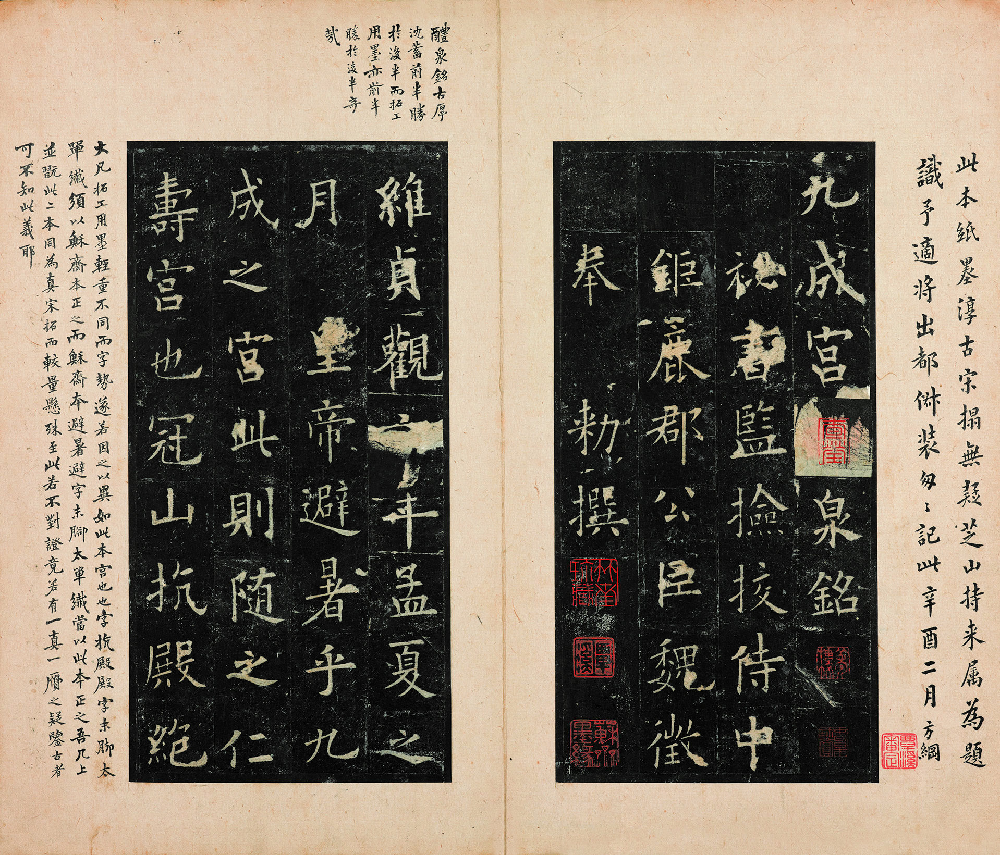

轻轻地，拓
纸压在碑面：墨落凸面，刻字留白
纸压在碑面上。墨只落在凸起的石面，字是刻进去的，所以拓出来的字是白的。
在纸上慢慢擦。
轻轻地，拓
纸压在碑面：墨落凸面，刻字留白
纸压在碑面上。墨只落在凸起的石面，字是刻进去的，所以拓出来的字是白的。
在纸上慢慢擦。
拓完了。
可以先读一读，或把现在拓到的样子存成图片。
你拓下的，是一千多年前刻下的字。
拓纸画面是根据原拓图像生成的可视化，非原拓本 · 底图：上海博物馆藏，图源 Wikimedia Commons
笔法要点待考，未找到可逐字引用的文献
点一个字看注释。虚线圈的是残损待考字，不计入进度。

上海博物馆藏“戚叔玉本”（南宋拓）；上海博物馆藏，图源 Wikimedia Commons。仅供非商业用途。拓纸上的画面是我们据此图生成的可视化。